← Index · ← Previous · Next →
Authors: Yu-Cheng Lin, Yu-Chao Hsu, I-Shan Tsai, Chun-Hua Lin, Kuo-Chung Peng, Jiun-Cheng Jiang, Yun-Yuan Wang, Tzung-Chi Huang, Tai-Yue Li, Kuan-Cheng Chen, Samuel Yen-Chi Chen, Nan-Yow Chen
Type: theory · Category: quantum information and computing · PDF: https://arxiv.org/pdf/2605.04604v1
Analysis basis: full PDF text, analyzed in chunks
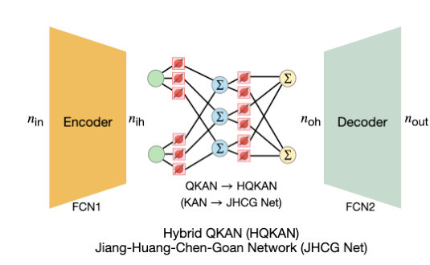
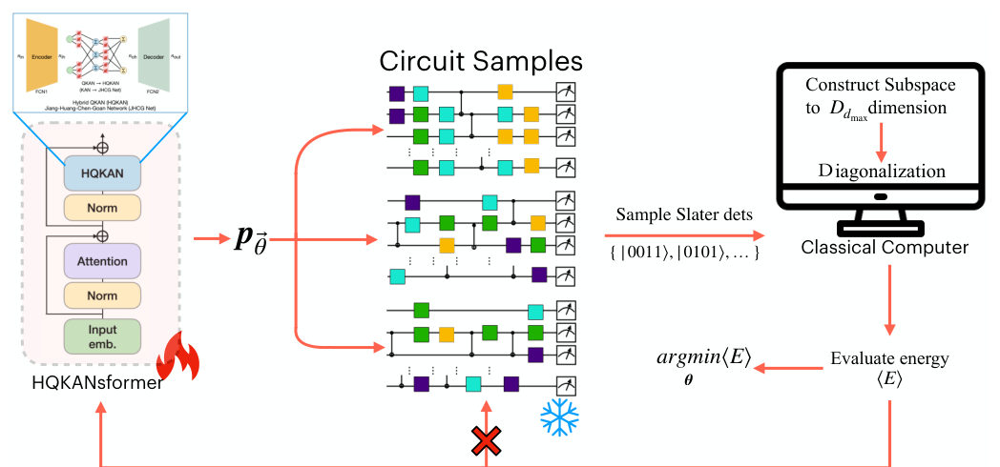
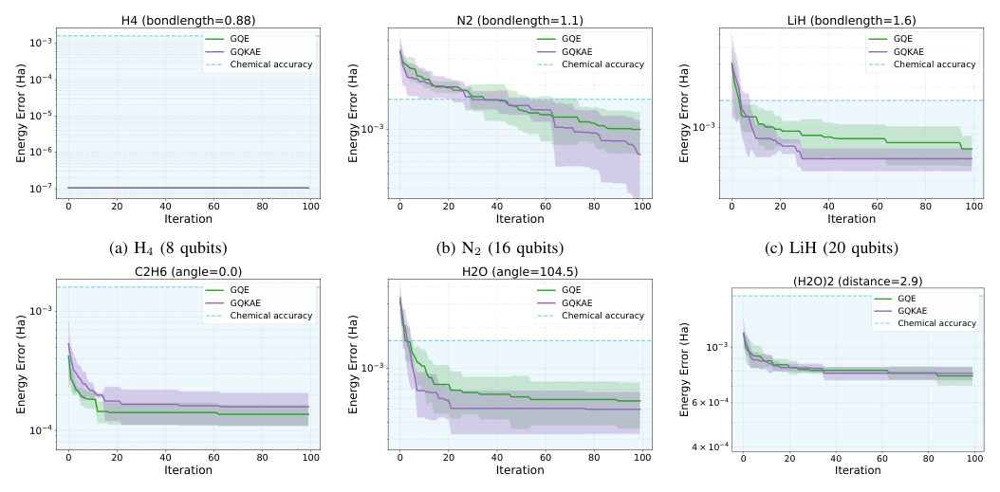
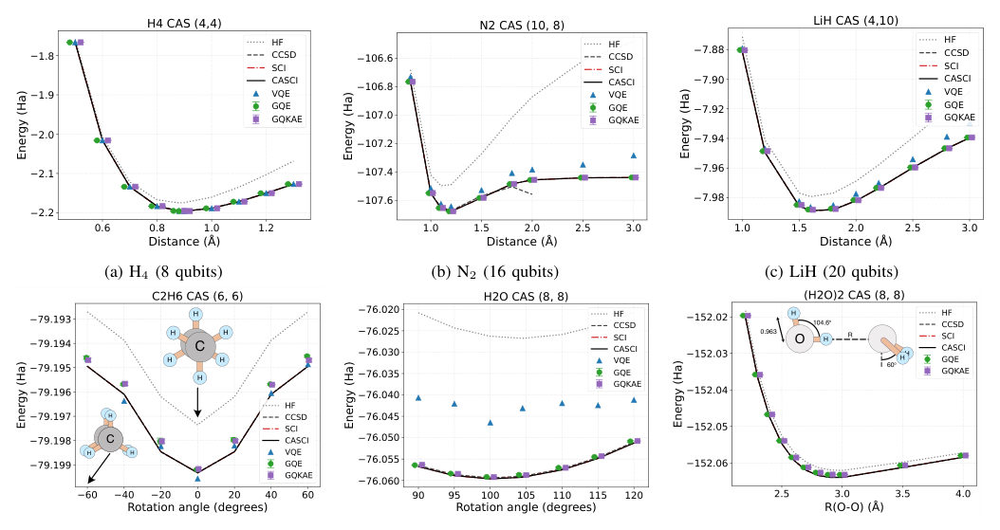
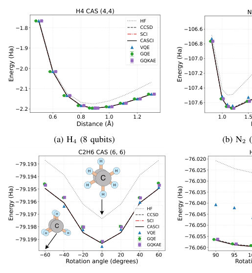
Summary. This paper introduces a more efficient generative model for constructing quantum circuits used in electronic structure calculations. By replacing heavy transformer layers with quantum-inspired Kolmogorov-Arnold networks, the authors significantly reduce the classical computational cost while maintaining high accuracy for molecular energy estimations.
Why it may be interesting. not directly relevant
Main problem. The scalability and parameter overhead of GPT-style Generative Quantum Eigensolvers (GQE) in quantum chemistry workflows, particularly as molecular active spaces and circuit lengths increase.
Main result. The proposed GQKAE architecture achieves chemical accuracy comparable to GQE while reducing trainable parameters and memory by approximately 66% and improving wall-time performance.
Method. A generative framework that replaces standard transformer feed-forward networks with hybrid quantum-inspired Kolmogorov-Arnold network (HQKAN) modules using data re-uploading activations.
Model / system. The method targets molecular electronic structure problems, specifically estimating ground-state energies for systems including H4, N2, LiH, C2H6, H2O, and the H2O dimer using a UCCSD-derived operator pool.
Key observables. Ground-state energy, chemical accuracy (error < 1.6 mHa), and potential energy surfaces (PES).
Important parameters / regimes. Subspace truncation dimension (d_max), number of measurement shots (N_shots), and circuit sequence length (L).
Assumptions / limitations. The circuit sequence length L must be manually specified; the method assumes the availability of a classical simulator like CUDA-Q for evaluation.
Figures summary. Figure 1 shows the HQKANsformer architecture; Figure 2 illustrates the GQKAE workflow; Figure 3 displays optimization history for various molecules; Figure 4 shows potential energy surfaces; Figures 6 and 7 show error convergence with respect to shots and subspace truncation.
Paper structure. The paper introduces the scalability bottleneck of GQE, proposes the GQKAE architecture using HQKAN modules, details the training via GRPO and evaluation via QSCI, presents numerical benchmarks on various molecular systems, and discusses limitations and future directions.
High-performance computing (HPC) is increasingly important for scalable quantum chemistry workflows that couple classical generative models, quantum circuit simulation, and selected configuration interaction postprocessing. We present the generative quantum-inspired Kolmogorov-Arnold eigensolver (GQKAE), a parameter-efficient extension of the generative quantum eigensolver (GQE) for quantum chemistry. GQKAE replaces the parameter-heavy feed-forward network components in GPT-style generative eigensolvers with hybrid quantum-inspired Kolmogorov-Arnold network modules, forming a compact HQKANsformer backbone. The method preserves autoregressive operator selection and the quantum-selected configuration interaction evaluation pipeline, while using single-qubit DatA Re-Uploading ActivatioN modules to provide expressive nonlinear mappings. Numerical benchmarks on H4, N2, LiH, C2H6, H2O, and the H2O dimer show that GQKAE achieves chemical accuracy comparable to the GPT-based GQE architecture, while reducing trainable parameters and memory by approximately 66% and improving wall-time performance. For strongly correlated systems such as N2 and LiH, GQKAE also improves convergence behavior and final energy errors. These results indicate that quantum-inspired Kolmogorov-Arnold networks can reduce classical-side overhead while preserving circuit-generation quality, offering a scalable route for HPC-quantum co-design on near-term quantum platforms.
Authors: Ranjani Ramachandran, Sayanwita Biswas, Prithwijit Mandal, Kyoungjun Lee, Madeleine Msall, Chang-Beom Eom, Patrick Irvin, Jeremy Levy, Mingyun Yuan
Type: experiment · Category: strongly correlated electrons · PDF: https://arxiv.org/pdf/2605.04402v1
Analysis basis: full PDF text, analyzed in chunks
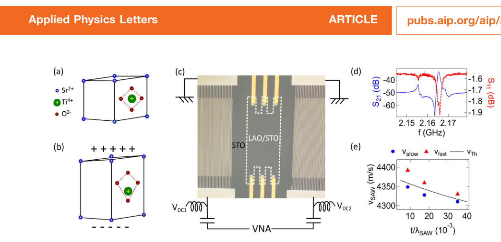
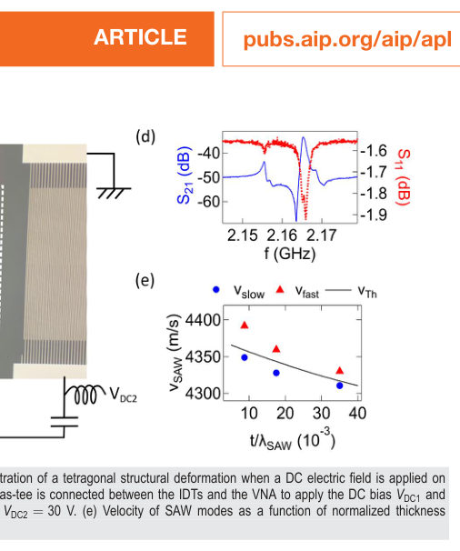
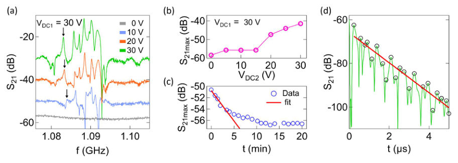
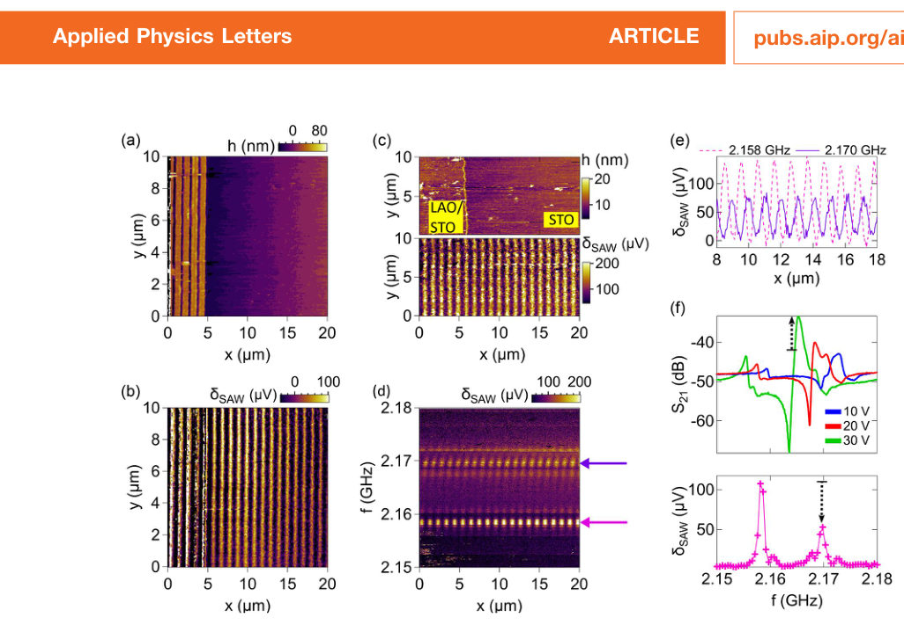
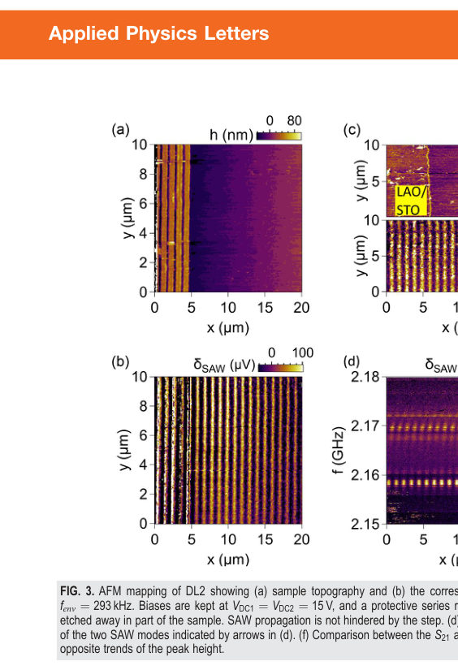
Summary. This paper demonstrates how to generate high-frequency surface acoustic waves in LAO/STO heterostructures using electric-field-induced electrostriction. By identifying new acoustic modes and achieving extremely low signal loss, the work provides a new method for controlling electrons and other quantum states in oxide-based platforms.
Why it may be interesting. not directly relevant
Main problem. The challenge of generating and controlling Surface Acoustic Waves (SAWs) in SrTiO3-based heterostructures due to the lack of intrinsic piezoelectricity at room temperature.
Main result. The researchers demonstrated GHz-frequency SAW generation via electrostriction in LAO/STO, identifying two distinct modes including a previously unobserved shear horizontal-type mode with ultra-low propagation loss.
Method. The study uses RF spectroscopy (VNA) to measure S-parameters and Atomic Acoustic Force Microscopy (AAFM) for sub-micron resolution imaging of SAW waveforms.
Model / system. The experimental platform consists of LaAlO3/SrTiO3 (LAO/STO) heterostructures where a DC bias induces electrostriction, creating a thin-film waveguide capable of supporting acoustic modes.
Key observables. S-parameters (transmission S21 and reflection S11), SAW propagation loss, SAW velocity, and spatial waveform imaging via AAFM.
Important parameters / regimes. GHz frequency range (up to 2.2 GHz), wavelengths of 2, 4, and 8 micrometers, and propagation loss on the order of 10^-3 dB per wavelength.
Assumptions / limitations. The identification of the second mode as SH-type is noted as a possibility rather than a definitive classification.
Figures summary. Figure 1 illustrates the electrostriction mechanism, experimental setup, and S-parameter transmission peaks; Figure 2 shows the enhancement of transmission with DC bias.
Paper structure. The paper introduces the motivation for SAW-based electron shuttling, describes the electrostriction-induced SAW generation mechanism, presents RF and AAFM experimental results, and discusses the implications for future quantum device integration.
The LaAlO$_3$/SrTiO$_3$ (LAO/STO) interface hosts a gate-tunable superconducting two-dimensional electron gas (2DEG) which can be programmed to create quantum devices such as ballistic electron waveguides and quantum dots. To fully exploit this platform for quantum transport, a key requirement is the ability to shuttle single electrons, electron pairs, and other exotic states between spatially separated devices with precision. Surface acoustic waves (SAWs), which travel along the surface of a solid, offer a powerful route to achieve this through their moving electrical potential that captures and transfers electrons. %acoustoelectric coupling. In particular, SAWs in the GHz regime enable fast, controlled transport of individual quantum particles. Although this approach is well-explored in GaAs-based 2DEG, SAW generation in STO remains largely unexplored due to the lack of intrinsic piezoelectricity at room temperature. Here, we investigate room-temperature SAWs in LAO/STO and observe SAW modes up to 2.2 GHz with very low propagation loss of the order $10^{-3}$ dB per wavelength. To directly visualize these modes, we employ Atomic Acoustic Force Microscopy (AAFM), achieving sub-micron resolution imaging of the SAW wave forms, providing insight into the electrostriction-induced SAW generation mechanism. Our measurements indicate a shear horizontal-type mode, which provides the ability to couple to in-plane degrees of freedom for future acoustoelectric and quantum device applications. This work studies the fundamentals of SAW excitation and propagation on STO, a widely used and commercially available substrate, enabling straightforward coupling of SAWs to a broad range of materials that can be grown or transferred onto STO.
Authors: Taiga Hayashi, Yuya Seki, Kotaro Terada, Yosuke Mukasa, Shuta Kikuchi, Shu Tanaka
Type: theory · Category: quantum information and computing · PDF: https://arxiv.org/pdf/2605.04825v1
Analysis basis: full PDF text, analyzed in chunks
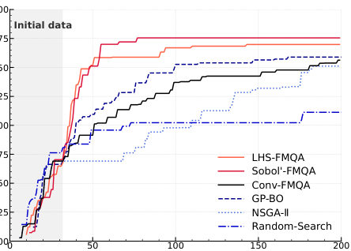
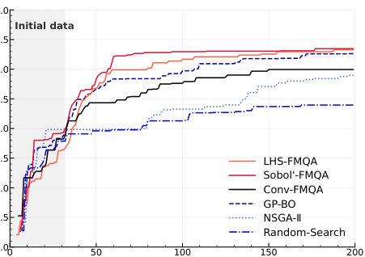
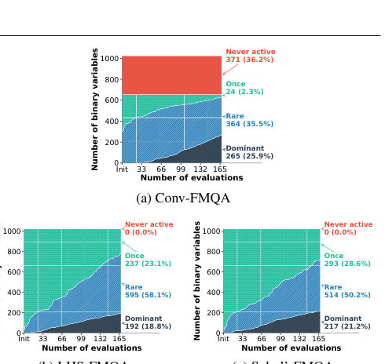
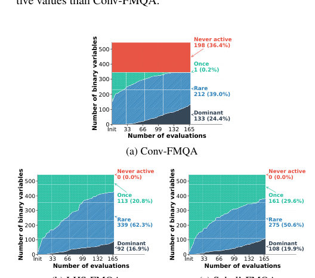
Summary. This paper improves the FMQA optimization framework by ensuring that all binary variables in a one-hot encoded system are represented in the initial training dataset. By using Latin Hypercube and Sobol' sampling, the authors prevent biased parameter updates, leading to more effective searches on Ising machines.
Why it may be interesting. not directly relevant
Main problem. In Factorization Machine with Quadratic-optimization Annealing (FMQA), one-hot encoding of variables can lead to 'uncovered' binary bits that never take the value one in the initial training data, causing vanishing gradients and biased QUBO coefficients.
Main result. The proposed LHS-FMQA and Sobol'-FMQA methods, which ensure complete marginal bit coverage, achieve higher mean final cruising speeds in wing-shape optimization benchmarks compared to the baseline FMQA.
Method. The authors use space-filling sampling techniques, specifically Latin Hypercube Sampling (LHS) and Sobol' sequences, to design initial training data that guarantees every binary variable in the one-hot encoding is activated at least once.
Model / system. The framework uses a Factorization Machine (FM) as a surrogate model for black-box optimization, which is then mapped to a Quadratic Unconstrained Binary Optimization (QUBO) form compatible with Ising machine hardware.
Key observables. Final mean cruising speed (m/s) and the optimization gain (improvement over initial best value).
Important parameters / regimes. Number of design variables (17 and 32), number of discrete levels (M=32), and initial training sample size (N0).
Assumptions / limitations. The method assumes the use of one-hot encoding for discretized variables and focuses on marginal bit coverage rather than pairwise bit coverage.
Figures summary. Figure 1 shows the optimization progress for a 17-variable problem; Figures 3 and 4 show the distribution of bit occurrences, highlighting the reduction of 'never active' bits in the proposed methods.
Paper structure. The paper identifies the gradient vanishing problem in FMQA, proposes LHS and Sobol' sampling methods to ensure marginal bit coverage, validates these methods using HPA wing-shape optimization benchmarks, and discusses limitations regarding pairwise coverage and space-filling effects.
Factorization machine with quadratic-optimization annealing (FMQA) is a black-box optimization method that combines a factorization machine (FM) surrogate with QUBO-based search by an Ising machine. When FMQA is applied to integer or discretized continuous variables via one-hot encoding, uniform random initial sampling can leave many binary variables never active in the initial training data, and the corresponding FM parameters receive no direct gradient updates from the observed responses. We address this by designing the initial training data to achieve complete marginal bit coverage, namely, ensuring that every binary variable obtained by one-hot encoding takes the value one at least once. We use two space-filling sampling methods, Latin hypercube sampling (LHS) and the Sobol' sequence, yielding LHS-FMQA and Sobol'-FMQA. On the human-powered aircraft wing-shape optimization benchmark with 17 and 32 design variables, both proposed methods achieved numerically higher mean final cruising speeds than the baseline FMQA, with the advantage more pronounced on the 32-variable problem.
Authors: Rahul Samanta, Sudin Ganguly, Santanu K. Maiti
Type: theory · Category: strongly correlated electrons · PDF: https://arxiv.org/pdf/2605.05064v1
Analysis basis: full PDF text, analyzed in chunks
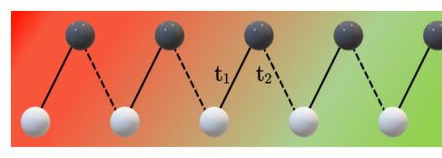
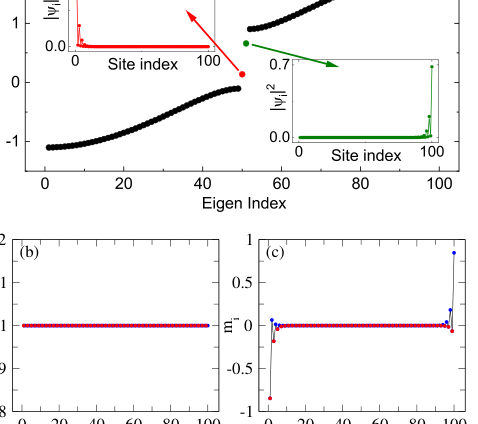
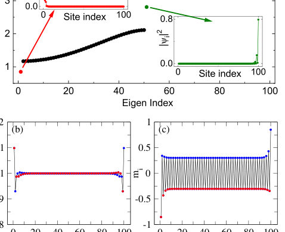
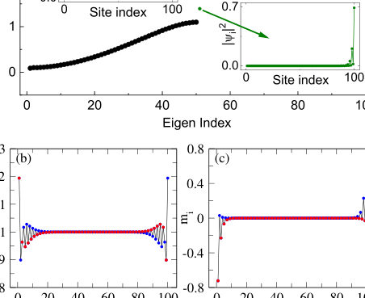
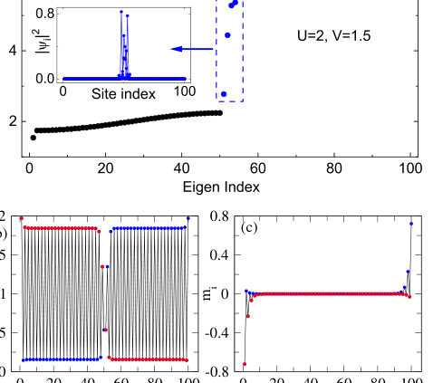
Summary. This paper demonstrates that in an extended Hubbard SSH chain, the spatial character of localized states is determined by the competition between on-site and nearest-neighbor interactions rather than the band topology. It identifies a transition from edge-localized spin-density waves to mid-chain charge-density-wave domain walls based on the $2V/U$ ratio. This establishes that these localized excitations are intrinsic, correlation-driven phenomena.
Why it may be interesting. not directly relevant
Main problem. The study investigates whether localized states in a 1D chain are driven by underlying band topology (SSH model) or by electron-electron interactions (Hubbard $U$ and $V$).
Main result. The localization of states is controlled by the ratio $2V/U$ rather than band topology, leading to edge-localized spin-density-wave (SDW) modes for $U > 2V$ and mid-chain charge-density-wave (CDW) domain walls for $U < 2V$.
Method. The authors use a self-consistent generalized Hartree-Fock mean-field approximation to solve the Hamiltonian.
Model / system. A half-filled, one-dimensional Su-Schrieffer-Heeger (SSH) chain described by an extended Hubbard model featuring alternating hopping amplitudes ($t_1, t_2$), on-site repulsion ($U$), and nearest-neighbor interaction ($V$).
Key observables. Energy spectrum (eigenvalues), local probability amplitudes, site-resolved charge density, and site-resolved spin density.
Important parameters / regimes. On-site interaction $U$, nearest-neighbor interaction $V$, the ratio $2V/U$, and hopping amplitudes $t_1$ and $t_2$ (covering topological, critical, and trivial regimes).
Assumptions / limitations. The study relies on the Hartree-Fock mean-field approximation, which neglects certain many-body correlation effects beyond the decoupling of interaction terms.
Figures summary. Figures show the energy spectrum, spatial localization of wavefunctions, and density profiles (charge and spin) across different interaction regimes and hopping phases, including the transition from edge modes to mid-chain domain walls.
Paper structure. The paper introduces the SSH-Hubbard model, details the Hartree-Fock method, presents results for different interaction ratios ($U$ vs $V$) across topological, critical, and trivial hopping regimes, and concludes with a summary of interaction-driven localization.
Using Hartree-Fock mean-field approach, we study the role of on-site ($U$) and extended ($V$) Hubbard interactions on the existence and evolution of edge modes in a half-filled Su-Schrieffer-Heeger (SSH) chain. We analyze the energy spectrum, local probability amplitudes, and site-resolved charge and spin density profiles across topological, critical, and trivial hopping regimes. We find that the localization of bound states is controlled by the ratio $2V/U$, with edge spin-density-wave modes for $U>2V$ and mid-chain charge-density-wave domain walls for $U<2V$, independent of band topology. These results establish the correlation-driven origin of localized states in finite one-dimensional chains.
Authors: S G Whittington
Type: theory · Category: statistical mechanics · PDF: https://arxiv.org/pdf/2605.05137v1
Analysis basis: full PDF text, analyzed in chunks
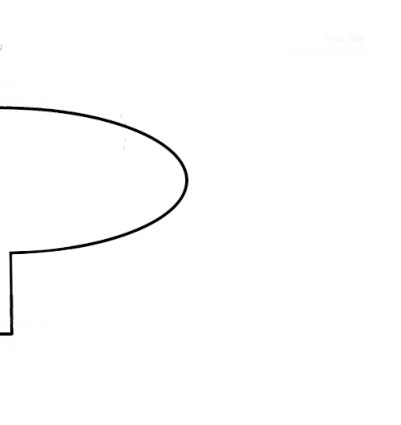
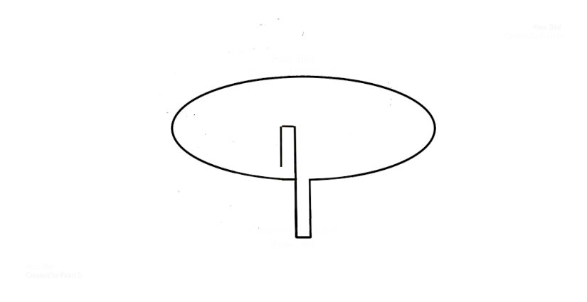
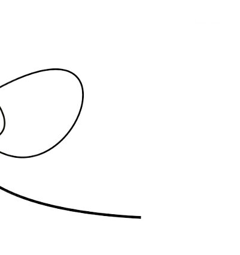
Summary. This paper provides rigorous mathematical proofs regarding the growth rates of lattice-based tadpole structures. It demonstrates how topological constraints, such as requiring the head of a tadpole to be unknotted, influence the asymptotic counting of these configurations in 2D and 3D lattices.
Why it may be interesting. not directly relevant
Main problem. The paper investigates the asymptotic counting and growth rates of 'tadpoles' (graphs consisting of a cycle/head and a path/tail) embedded in d-dimensional hypercubic lattices, specifically looking at how topological constraints like knot type and surface piercing affect these rates.
Main result. The author proves that the exponential growth rate of tadpoles is generally the same as self-avoiding walks, but identifies specific scaling regimes where constraints like an unknotted head or a fixed head-to-tail ratio alter the growth rate.
Method. The study uses rigorous combinatorial and probabilistic methods, including Kesten's Pattern Theorem, Madras' End Pattern Theorem, and construction techniques involving the concatenation of polygons and walks.
Model / system. The model consists of self-avoiding walks (SAWs) and polygons on d-dimensional hypercubic lattices (Z^2 and Z^3), specifically focusing on the topology of tadpoles (lassos).
Key observables. The growth rate (connective constant) of the number of tadpoles, the knot type of the head, and the number of times the tail pierces the surface spanned by the head.
Important parameters / regimes. Total number of edges (n), number of edges in the head (h), the ratio of head to total edges (alpha), and the knot type (K).
Assumptions / limitations. The results assume the structures are embedded in hypercubic lattices and analyze specific scaling regimes where the head and tail grow linearly with n.
Figures summary. Figure 4 illustrates a tadpole with a trefoil knot head and a piercing tail; Figure 5 displays various graph topologies including twin-tailed and two-tailed tadpoles.
Paper structure. The paper presents rigorous proofs for the asymptotic behavior of tadpoles, moving from general growth rates to specific constraints on knot types and geometric configurations like surface piercing.
We prove several rigorous results about the asymptotic behaviour of the numbers of tadpoles (or lassos) embedded in a lattice, including cases where the head is subject to a constraint like being unknotted, or where the tail pierces the surface spanned by the head.
Authors: K. Jaksetič, T. Arh, M. Pregelj, M. Gomilšek, M. Dragomir, P. Prelovšek, M. Ulaga, L. Šibav, M. Malovrh, K. Železnikar, Z. Jagličić, P. Manuel, F. Orlandi, D. Khalyavin, M. D. Le, N. Bujault, E. Lhotel, J. van Tol, U. Jena, B. Sana, P. Khuntia, A. Zorko
Type: both · Category: strongly correlated electrons · PDF: https://arxiv.org/pdf/2605.04611v1
Analysis basis: full PDF text, analyzed in chunks
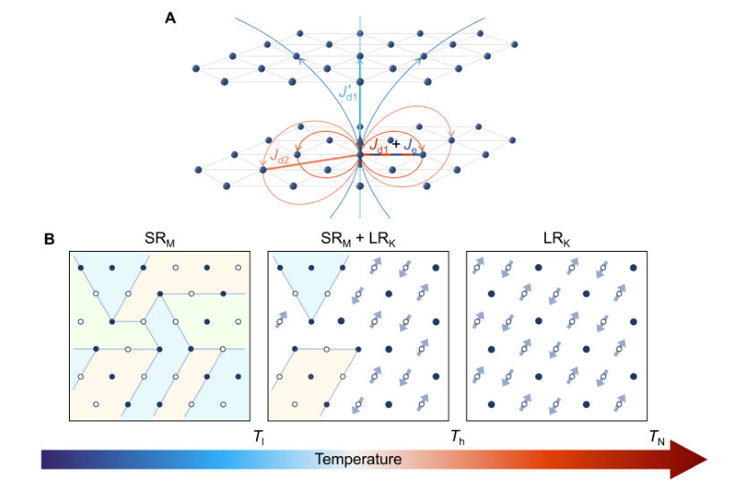
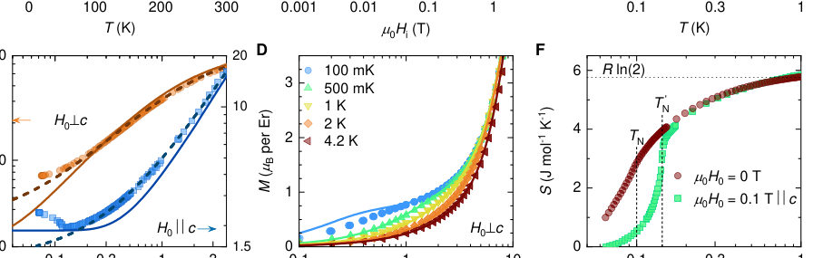
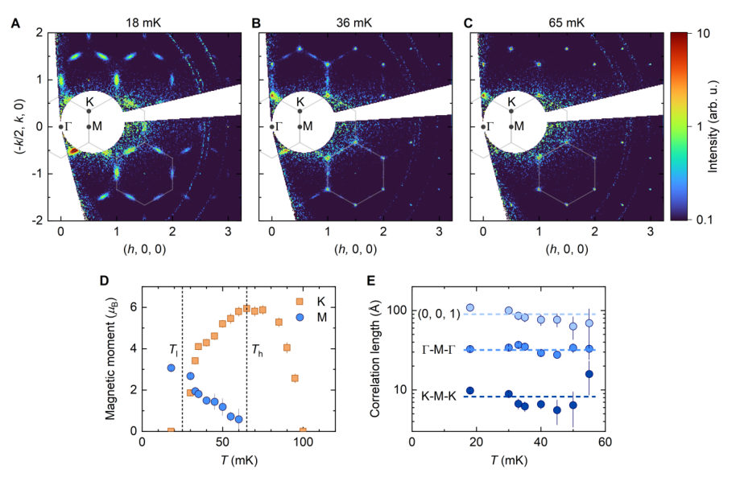
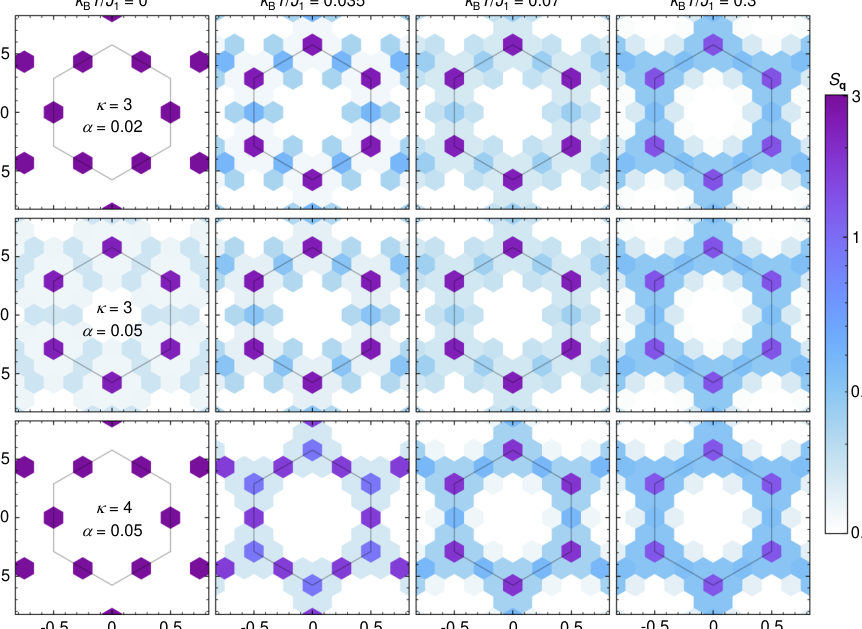
Summary. This paper reports the discovery of a 'spin Pomeranchuk effect' in the quantum magnet ErTa7O19, where cooling the system causes a long-range ordered magnetic phase to melt into a short-range correlated state. This counterintuitive phenomenon arises from the competition between exchange and dipolar interactions. The findings provide a new way to understand phase transformations in frustrated magnetic systems.
Why it may be interesting. not directly relevant
Main problem. Investigating the 'spin Pomeranchuk effect' in the quantum magnet ErTa7O19, where the system undergoes an unconventional transition from a long-range ordered state to a short-range correlated state upon cooling.
Main result. The study demonstrates that the Ising-like triangular-lattice antiferromagnet ErTa7O19 exhibits 'melting upon cooling,' transitioning from a three-sublattice long-range ordered phase to a short-range correlated spin-stripe state due to the competition between exchange and dipolar interactions.
Method. The researchers used inelastic neutron scattering, electron spin resonance, and SQUID magnetometry for experimental characterization, combined with Crystal Electric Field (CEF) modeling, Finite-Temperature Lanczos Method (FTLM), and Monte Carlo simulations for theoretical analysis.
Model / system. The system is ErTa7O19, a rare-earth heptatantalate featuring Er3+ ions on a triangular lattice with strong Ising-like anisotropy. The model is an XXZ exchange Hamiltonian supplemented by long-range dipolar interactions.
Key observables. Magnetic propagation vectors (qK and qM), magnetic structure factor, magnetic entropy, specific heat, g-factors, and magnetization curves.
Important parameters / regimes. Néel temperature TN = 100 mK, transition temperatures Th = 65 mK and Tl = 25 mK, and high anisotropy ratio (gc/gab approx 10).
Assumptions / limitations. The use of a 2D model to describe the physics, with 3D ordering treated via a mean-field approximation for interlayer interactions.
Figures summary. Figure 1A shows a schematic of Er3+ magnetic moments and interactions; Figure S1 shows XRD Rietveld refinement and Laue diffraction; Figure S2 shows low-temperature magnetization and specific heat; Figure S3 shows CEF-related data.
Paper structure. The paper introduces the concept of inverse melting, describes the crystal structure and magnetic properties of ErTa7O19, presents experimental neutron and magnetic data, provides theoretical modeling via FTLM and CEF to explain the phase sequence, and concludes with the implications of the spin Pomeranchuk effect.
Heating enhances thermal fluctuations and typically leads to melting of solids, but in exceptional cases, heating can also cause liquids to solidify. The paradigm of this counterintuitive phenomenon is solidification of liquid $^3$He upon increasing temperature, known as the Pomeranchuk effect. Here we show that such inverse melting also appears in quantum magnetism. We find that, on cooling, the Ising-like triangular-lattice antiferromagnet erbium heptatantalate first develops a three-sublattice long-range magnetic order -- analogous to a solid -- which then, unexpectedly, melts at even lower temperatures into a short-range correlated spin-stripe state -- analogous to a liquid. We propose that such an unprecedented ``spin Pomeranchuk effect" can generically arise from strong competition between spin-spin interactions in frustrated magnets, and provides a novel avenue to transformations between exotic magnetic phases.
Authors: S. Suetsugu, F. Hori, M. Shibata, S. Kitagawa, K. Ishida, T. Asaba, S. Nakazawa, Q. Li, H. -H. Wen, T. Shibauchi, H. Kontani, Y. Matsuda
Type: experiment · Category: strongly correlated electrons · PDF: https://arxiv.org/pdf/2605.05101v1
Analysis basis: full PDF text, analyzed in chunks
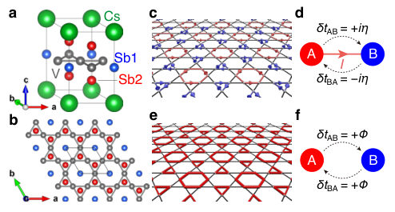
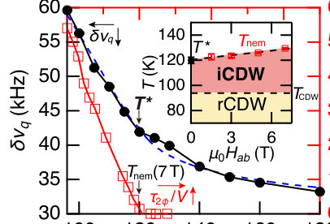
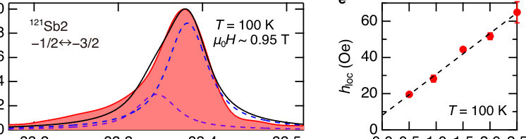
Summary. This paper reports the discovery of microscopic evidence for an imaginary charge density wave in the kagome metal CsV3Sb5. By using NMR/NQR spectroscopy, the authors identified spontaneous local magnetic fields arising from chiral loop currents. This establishes a new form of quantum order characterized by broken time-reversal symmetry.
Why it may be interesting. not directly relevant
Main problem. Determining whether the anomalous electronic phenomena in the kagome metal CsV3Sb5 arise from real charge density waves or a controversial 'imaginary charge density wave' (iCDW) associated with spontaneous time-reversal symmetry breaking.
Main result. The study provides microscopic evidence for a pure iCDW state characterized by chiral loop currents, evidenced by spontaneous local magnetic fields of ~1 mT and a triple-q configuration.
Method. Nuclear Quadrupole Resonance (NQR) and Nuclear Magnetic Resonance (NMR) spectroscopy on the 121-Sb site, utilizing field-dependent and temperature-dependent measurements to disentangle magnetic and electric effects.
Model / system. The kagome nonmagnetic metal CsV3Sb5, specifically focusing on the Sb1 and Sb2 sites within the 2D V-Sb kagome layers, modeled via a triple-q loop current configuration.
Key observables. Spectral linewidth (FWHM), spectral centroid asymmetry, local hyperfine field strength (h_loc), and transition frequency shifts.
Important parameters / regimes. Transition temperatures T_CDW (~94 K), T* (~120 K), and local magnetic fields (~1 mT).
Assumptions / limitations. The assumption that the observed spectral asymmetry follows a triple-q distribution where sites experience hyperfine fields in a 1:3 ratio.
Figures summary. Figures show the temperature dependence of NQR linewidth broadening, the splitting of resonant frequencies under a c-axis magnetic field, and the successful fitting of experimental spectra using a triple-q model.
Paper structure. The paper introduces the controversy of iCDW, presents NQR/NMR evidence of anomalous broadening at T*, demonstrates the magnetic origin of this broadening through field-dependent NMR, validates the triple-q model, and concludes with the identification of spontaneous time-reversal symmetry breaking.
Dissipationless charge transport without any energy loss is one of the most fascinating phenomena in condensed matter physics. This extraordinary state manifests in two well-established systems: superconductors and quantum Hall systems. A proposed third category is associated with chiral loop current order, characterized by the spontaneous formation of microscopic electric current loops. The microscopic origin of these currents stems from imaginary hopping terms, conceptualized as an imaginary charge density wave (iCDW). Despite extensive investigations, its existence remains highly controversial. Here we report site-selective spectroscopic evidence for a pure iCDW in the kagome nonmagnetic metal CsV$_3$Sb$_5$. Nuclear quadrupole resonance spectra at out-of-plane $^{121}$Sb site sensitive to in-plane currents reveal anomalous broadening below $T^*\approx$120 K, coinciding with the nematic transition well above the real charge density wave (CDW). Under magnetic fields, the spectra exhibit asymmetric lineshapes, demonstrating that this broadening purely originates from magnetic effects rather than from electric quadrupolar effects associated with CDW fluctuations. The observed lineshapes are quantitatively consistent with ~1 mT local fields induced by chiral loop currents, indicating spontaneous time-reversal symmetry breaking. This microscopic identification of the long-sought pure iCDW establishes a novel form of quantum order, potentially revolutionizing our understanding of exotic electronic states in quantum materials.
Authors: Rakshit M. Gharat, Gopikrishnan Muraleedharan, Dominic W. Berry, Gavin K. Brennen
Type: theory · Category: quantum information and computing · PDF: https://arxiv.org/pdf/2605.04861v1
Analysis basis: full PDF text, analyzed in chunks
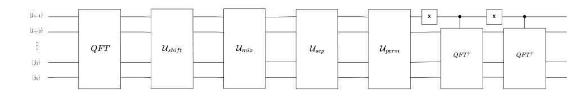
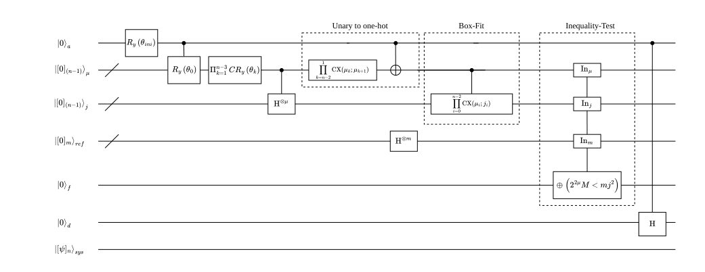
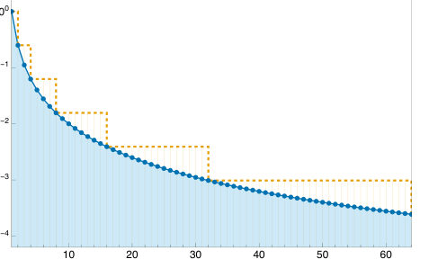
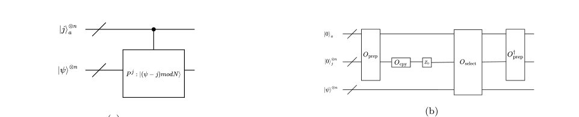
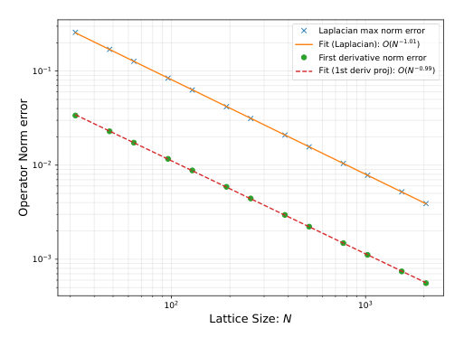
Summary. This paper presents a new quantum algorithm for solving partial differential equations using the SLAC derivative discretization. By combining LCU-based block-encoding with the Quantum Shannon Wavelet Transform, the authors achieve an efficient, multi-scale approach that avoids the unphysical artifacts of standard lattice methods.
Why it may be interesting. This is highly relevant for many-body dynamics and field theory simulations, as it provides a way to implement non-local operators (essential for avoiding fermion doubling) on quantum hardware with efficient scaling.
Main problem. Developing efficient quantum algorithms to solve partial differential equations (PDEs) using SLAC derivatives, which are non-local and result in dense matrices that are difficult to simulate classically.
Main result. The authors construct efficient LCU-based block-encodings for first-order derivative and Laplacian operators in the SLAC representation, achieving polylogarithmic gate complexity and reduced condition numbers via wavelet preconditioning.
Method. The approach utilizes Linear Combination of Unitaries (LCU) for block-encoding, the Quantum Shannon Wavelet Transform (QSWT) for multi-scale representations, and a nested-box inequality-test framework for efficient state preparation.
Model / system. The framework applies to discretized continuum field theories and many-body quantum systems on a finite lattice, specifically focusing on translation-invariant pseudodifferential operators like the SLAC Laplacian and first-order derivative.
Important parameters / regimes. Complexity metrics including subnormalization factor (alpha), gate complexity (O(n^2)), and error scaling (epsilon); momentum scales (IR and UV sectors).
Assumptions / limitations. Assumes coefficient functions are smoothly decaying, the lattice size is a power of two, and the right-hand-side state has support on the invertible subspace of the operator.
Figures summary. Figure 1 shows a quantum circuit implementation of the QSWT; Figure 2 illustrates a high-level circuit diagram for the state-preparation protocol; Figure 4 depicts the SELECT operation as a black box of adder circuits.
Paper structure. The paper introduces the problem of SLAC discretization, proposes LCU-based block-encodings for derivatives, details a state-preparation protocol using nested-box inequality tests, implements multi-scale representations via QSWT, introduces a wavelet preconditioner, and concludes with a complexity analysis and comparison to general PDO frameworks.
We present the construction of efficient linear-combination-of-unitaries (LCU)-based block-encodings for the first-order derivative and Laplacian operators in the SLAC representation. We use state-preparation techniques designed for smoothly decaying functions to efficiently prepare the dense LCU amplitudes with high success probability and low gate cost. Furthermore, we demonstrate how Shannon wavelet transforms can be applied to these block-encodings to efficiently obtain multi-scale representations of the SLAC derivative operators. We then show how to apply a diagonal preconditioner that reduces the condition number of these matrices in the multi-scale wavelet basis to a small constant. This approach enables the solution of partial differential equations with SLAC-discretised derivative operators on a finite lattice using the quantum linear solving algorithm (QLSA). Throughout this work, we analyse the computational complexity and error scaling of each implementation.
Authors: Nicholas R. Beaton, Aleksander L. Owczarek
Type: theory · Category: statistical mechanics · PDF: https://arxiv.org/pdf/2605.04367v1
Analysis basis: full PDF text, analyzed in chunks
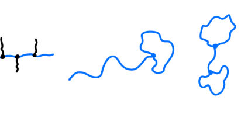
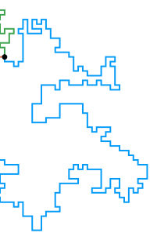
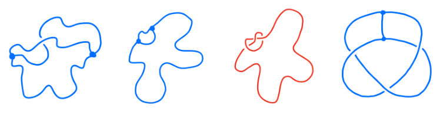
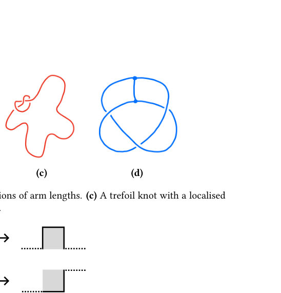
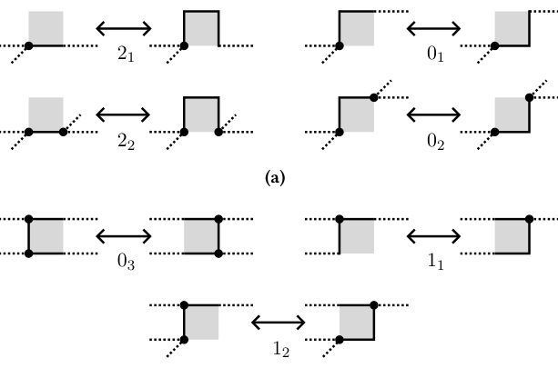
Summary. This paper uses advanced Monte Carlo techniques to study the topological and scaling properties of self-avoiding theta-graphs. It provides high-precision estimates for critical exponents and supports long-standing theoretical conjectures regarding polymer networks in two dimensions.
Why it may be interesting. not directly relevant
Main problem. The study aims to characterize the scaling behavior, critical exponents, and geometric properties of self-avoiding theta-graphs (spatial graphs with two vertices of degree 3) on 2D square and 3D cubic lattices.
Main result. The authors found evidence supporting Duplantier's conjecture for the entropic critical exponent in 2D monodisperse theta-graphs and provided precise estimates for exponents governing arm-length distributions and branch point separation.
Method. A combination of the Wang-Landau Monte Carlo algorithm for density of states estimation and a variant of the BFACF algorithm adapted for degree-3 vertices was used.
Model / system. The model consists of self-avoiding theta-graphs (polydisperse and monodisperse) embedded in 2D square and 3D simple cubic lattices, focusing on unknotted configurations in 3D.
Key observables. Critical exponents (zeta, beta, sigma, tau, eta, nu), growth rate (mu), arm-length distributions, and mean squared distance between branch points.
Important parameters / regimes. Total graph size (n), arm lengths (l1, l2, l1+l2), and lattice dimensionality (2D vs 3D).
Assumptions / limitations. The study focuses on unknotted theta-graphs in 3D and assumes ergodicity within the expanded BFACF move set.
Figures summary. Figures include lattice topology illustrations, examples of theta-graphs, schematics of BFACF moves, and various plots of scaling ratios and error convergence used to estimate critical exponents.
Paper structure. The paper introduces the theta-graph model, describes the modified BFACF and Wang-Landau algorithms, presents numerical results for 2D and 3D scaling exponents, and concludes with comparisons to theoretical conjectures.
Theta-graphs are a type of spatial graph with two vertices connected by three edges. We investigate embeddings of theta-graphs in the square and simple cubic lattices, using a combination of the Wang-Landau Monte Carlo method with a variant of the BFACF algorithm which accommodates vertices of degree 3. This allows us to estimate the critical exponents governing the number of theta-graphs and the distributions of the different arm-lengths. For the cubic lattice these values can be compared to the corresponding exponents for prime knots. We also study the number of `monodisperse' theta-graphs where the three arms have the same lengths, and find evidence supporting a conjecture for the critical exponent in two dimensions.
Authors: Peiyue Ma, Jingyuan Li, Xing Huang, Yixing Zhao, Yifeng Han, Mengwu Huo, Deyuan Hu, Chaoxin Huang, Hengyuan Zhang, Sihao Deng, Lunhua He, Juan Rodriguez-Carvajal, Abhisek Bandyopadhyay, Alessandro Puri, Devashibhai Adroja, Xiang Chen, Tao Xie, Zhen Chen, Hualei Sun, Meng Wang
Type: experiment · Category: strongly correlated electrons · PDF: https://arxiv.org/pdf/2605.04562v1
Analysis basis: full PDF text, analyzed in chunks
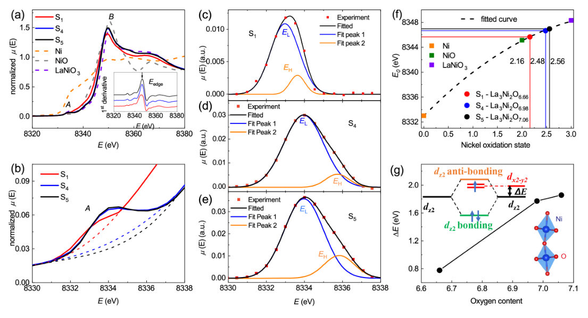
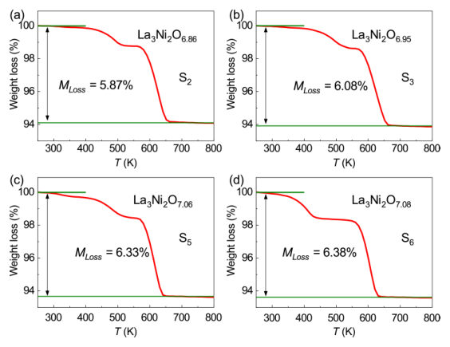
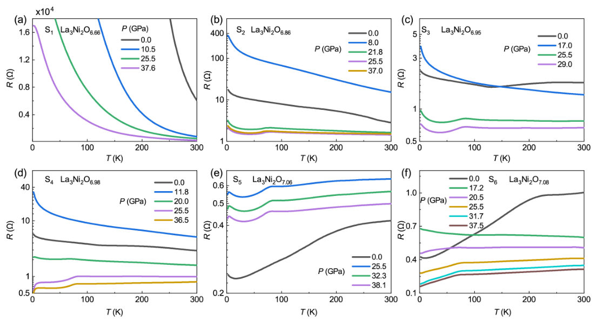
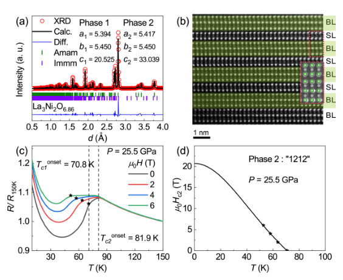
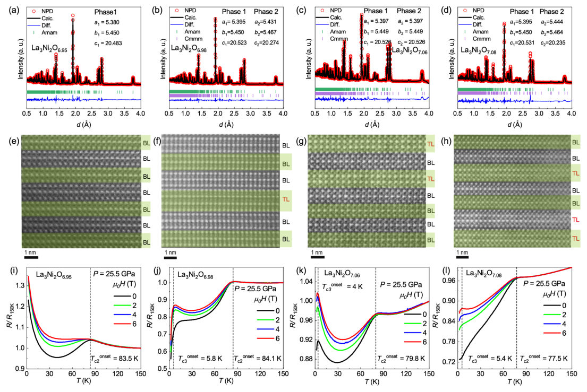
Summary. This paper demonstrates how precise control of oxygen stoichiometry in La3Ni2O7+d can be used to regulate structural intergrowths and tune the superconducting properties. By establishing a phase diagram, the authors show that oxygen content directly modulates the upper critical field and phase purity in these nickelates. This provides essential insights for the synthetic control and mechanistic understanding of high-temperature superconductivity in the Ruddlesden-Popper series.
Why it may be interesting. not directly relevant
Main problem. The study addresses the difficulty of synthesizing high-quality Ruddlesden-Popper nickelates due to uncontrolled oxygen content and the presence of structural intergrowth phases, which complicates the understanding of high-Tc superconductivity in La3Ni2O7+d.
Main result. The researchers demonstrate that oxygen content regulates both the structural phase purity (controlling bilayer, hybrid-1212, and trilayer intergrowths) and the superconducting strength, specifically modulating the upper critical field (Hc2) of the bilayer phase.
Method. The work employs solid-state and sol-gel synthesis with oxygen tuning via annealing, structural characterization using XAFS, Neutron Powder Diffraction, and STEM, and high-pressure electronic transport measurements in a diamond anvil cell.
Model / system. The physical system is the Ruddlesden-Popper nickelate La3Ni2O7+d, specifically focusing on the bilayer phase and its associated intergrowth phases (hybrid-1212 and trilayer) under high pressure (up to ~37.6 GPa).
Key observables. Oxygen stoichiometry (delta), Ni valence state, superconducting transition temperature (Tc), upper critical field (Hc2), Ni-O-Ni bond angle, and NiO6 octahedral distortion.
Important parameters / regimes. Oxygen content range (-0.34 to +0.08), pressure regime (>25 GPa), and Ni valence state.
Figures summary. Fig 1: Ni K-edge XAFS spectra, Ni valence determination, and correlation between crystal field splitting and oxygen content; Fig 2: TGA curves for oxygen-doped samples; Fig 3: Temperature-dependent resistance under pressure showing superconductivity; Fig 4: Characterization of specific samples.
Paper structure. The paper begins with the characterization of Ni valence and structural distortions via XAFS, followed by the verification of oxygen stoichiometry via TGA, then moves to the identification of structural intergrowth phases using diffraction and microscopy, and concludes with high-pressure transport measurements and the establishment of a phase diagram relating oxygen content to superconductivity.
The synthesis of high-quality Ruddlesden-Popper (RP) nickelates remains challenging due to variations in oxygen content and the prevalence of intergrown RP phases. Precisely controlling the stoichiometry and characterizing the resulting physical properties are essential for understanding the mechanism of high-$T_c$ superconductivity in these materials. In this work, we synthesize a series of La$_3$Ni$_2$O$_{7+δ}$ samples with systematically controlled oxygen content and perform comprehensive structural and compositional analyses. Precise oxygen tuning enables us to tailor the microstructure, yielding a pure bilayer phase, a mixture of bilayer and hybrid single-layer-bilayer phases, and a predominantly bilayer phase containing trilayer intergrowths. High-pressure transport measurements reveal distinct superconducting transitions with contrasting $T_c$ values, corresponding to the bilayer phase, the hybrid phase, and trilayer inclusions. Notably, we find that oxygen content not only governs the phase purity$-$i.e., the presence of intergrowth phases$-$but also directly modulates the upper critical field ($H_{c2}$) of the bilayer superconductivity. By establishing a phase diagram of $T_c$ and $H_{c2}$ as functions of oxygen content in La$_3$Ni$_2$O$_{7+δ}$, this work advances synthetic control and provides new insights into the superconducting mechanism of RP nickelates.
Authors: Ioannis Liliopoulos, Georgios D. Varsamis, Konstantinos Rallis, Evangelos Tsipas, Ioannis G. Karafyllidis, Georgios Ch. Sirakoulis, Panagiotis Dimitrakis
Type: both · Category: quantum information and computing · PDF: https://arxiv.org/pdf/2605.04991v1
Analysis basis: full PDF text, analyzed in chunks
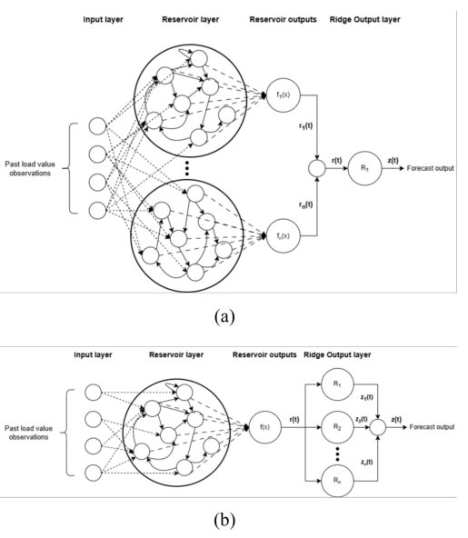
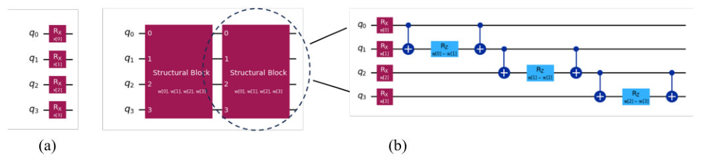
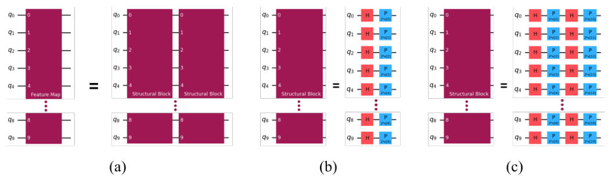
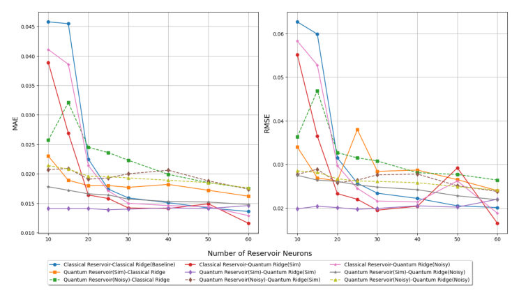
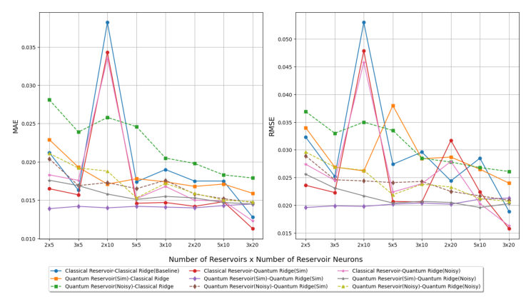
Summary. This paper proposes and evaluates scalable, distributed quantum reservoir computing architectures for time-series forecasting. It demonstrates that partitioning quantum resources across multiple QPUs can mitigate noise and improve prediction accuracy compared to classical and single-node quantum methods.
Why it may be interesting. not directly relevant
Main problem. The difficulty of training recurrent neural networks (RNNs) using backpropagation through time and the need for scalable, modular quantum architectures for time-series forecasting in the NISQ era.
Main result. Quantum-enhanced distributed architectures consistently outperform classical baselines, with peak reductions in MAE and RMSE of up to 78.8% and 72.3%, respectively.
Method. The study evaluates four architectures (SRSR, MRSR, SRMR, MRMR) using quantum reservoir computing with quantum-kernel-based ridge regression, utilizing both ideal and hardware-informed noisy simulations.
Model / system. A modular, multi-QPU pipeline consisting of quantum neurons (4-qubit circuits with feature maps and ansatze) and quantum kernel-based readout layers, simulated using Qiskit and CUDA-Q with noise models from IBM and IONQ hardware.
Key observables. Mean Absolute Error (MAE), Root Mean Squared Error (RMSE), and Coefficient of Determination (R2).
Important parameters / regimes. Number of neurons, number of reservoirs, number of readout instances, and number of qubits in the quantum feature map.
Assumptions / limitations. The study assumes the NISQ era constraints, specifically focusing on small-scale, noisy, and limited-qubit hardware environments.
Figures summary. Figure 1 illustrates the different reservoir architectures; Figure 2 shows the quantum neuron structure (feature map and ansatz); Figure 3 details the quantum kernel feature map; Figures 4-7 show the distribution of error metrics across different architectures.
Paper structure. The paper introduces the problem of RNN training, defines the four proposed distributed quantum reservoir architectures, details the quantum neuron and kernel construction, presents performance benchmarks across ideal and noisy simulations, and concludes with a discussion on scaling and noise robustness.
Reservoir computing provides an alternative to recurrent neural networks by overcoming the common problems of backpropagation through time and by training only a simple readout layer. The emerging field of quantum computing offers a new computing paradigm that promises to enhance learning through richer feature representations. In this work, we investigate quantum reservoir computing for time-series forecasting. We explore and benchmark four different architectures that combine single or multiple (distributed) reservoirs with single or multiple (distributed) ridge-regression readout layers. We evaluate these architectures using ideal and hardware-informed noisy simulations, and include both hybrid and fully quantum variants, with classical reservoir counterparts serving as a baseline. The results indicate that quantum-enhanced configurations consistently improve forecasting accuracy by reducing the mean absolute error (MAE) and the root mean squared error (RMSE) up to 78.8% and 72.3%, respectively, while distributed architectures effectively enable scaling by utilizing multiple quantum resources in a hardware-agnostic manner. These findings support distributed quantum reservoir computing as a promising, modular approach for forecasting on the quantum platforms of the noisy intermediate-scale quantum (NISQ) era.
Authors: Jonah Townsend, Enzo Conceição Picinini, Rogério de Sousa
Type: theory · Category: quantum information and computing · PDF: https://arxiv.org/pdf/2605.04353v1
Analysis basis: full PDF text, analyzed in chunks
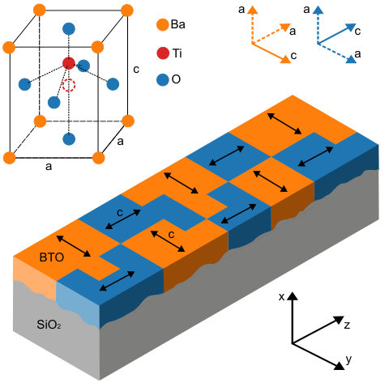
Summary. The paper develops a theory to quantify photon loss in ferroelectric waveguides caused by interface roughness and domain disorder. It demonstrates that loss peaks when domain sizes match the wavelength and suggests using sub-micron domains to enable low-loss quantum photonic devices.
Why it may be interesting. This is highly relevant for quantum optics and quantum networking as it provides a theoretical framework for minimizing photon loss in high-nonlinearity materials essential for scalable quantum photonic integrated circuits.
Main problem. Addressing the high optical loss in ferroelectric photonic devices, specifically Barium Titanate (BTO) waveguides, which hinders their integration into quantum photonic chips and the quantum internet.
Main result. The study identifies that loss is maximized in the Mie regime (domain size ~ wavelength) and provides a strategy to reduce loss by operating in the Rayleigh regime (sub-micron domains) or using single-domain waveguides.
Method. A perturbative electrodynamical theory using the sourceless Ampere-Maxwell law to treat permittivity fluctuations as effective volume currents, integrated with electron microscopy data.
Model / system. Barium Titanate (BTO) on Silicon Dioxide (SiO2) slab waveguides, featuring spatial fluctuations in electric permittivity due to interface roughness and ferroelectric domain disorder.
Key observables. Attenuation coefficient (alpha)
Important parameters / regimes. Domain length scales (L), wavelength of light (lambda), refractive indices of core and cladding, Mie regime, and Rayleigh regime.
Assumptions / limitations. Neglect of near-field effects in unguided mode loss calculation; use of a free-space approximation for unguided modes; and a simplified model for domain loss using only primary peaks.
Figures summary. Figure 1 shows a waveguide diagram with roughness and domain distribution; Figure 2 compares 1D and 2D roughness models; Figure 3 displays spectral density of fluctuations; Figure 4 illustrates the transition between Mie and Rayleigh regimes.
Paper structure. The paper introduces the problem of loss in BTO waveguides, presents a perturbative theory for scattering, applies the theory to interface roughness and domain disorder, compares 1D and 2D models, and concludes with design implications for low-loss devices.
Ferroelectric materials have colossal optical nonlinearities, but their integration into quantum photonic chips is made challenging by the additional loss mechanisms that they introduce. Here we present a perturbative theory that expresses non-absorptive (elastic) photon scattering-induced loss as a functional of a general spectral density for spatial fluctuations of electric permittivity. We apply the theory to calculations of attenuation coefficients $α$ in slab waveguides in order to compare two distinct loss mechanisms: Interface roughness and ferroelectric domain disorder. our theory can account for realistic roughness without special symmetry considerations, and it demonstrates how to use electron microscoopy images of ferroelectric domains to obtain explicit numerical predictions for $α$. Loss is maximum when the mean domain length is comparable to the wavelength of light (Mie regime), indicating that, for telecom wavelengths, sub-micron domains (Rayleigh regime) or single domain waveguides provide equivalent strategies for reducing loss.
Authors: Gongyu Ni, Lester Ho
Type: theory · Category: quantum information and computing · PDF: https://arxiv.org/pdf/2605.04767v1
Analysis basis: full PDF text, analyzed in chunks
Summary. This paper proposes new strategies for managing entanglement distribution in complex quantum networks. By using reinforcement learning, the authors demonstrate a way to maximize successful entanglement requests and network efficiency while minimizing latency in multi-channel architectures.
Why it may be interesting. not directly relevant
Main problem. Optimizing resource allocation and scheduling for entanglement flows in multi-channel quantum networks to balance delay, success rates, and capacity utilization.
Main result. A PPO-based reinforcement learning approach provides the best overall balance by improving capacity utilization while maintaining low delay and high success rates, outperforming classical greedy and static algorithms.
Method. The study compares several allocation strategies, including Dynamic/Static Efficient, Success Enhancement (multipath), and a Proximal Policy Optimization (PPO) reinforcement learning framework, using multi-slot simulations.
Model / system. A multi-channel quantum network model featuring heterogeneous links with photon loss, quantum repeaters for entanglement swapping, and quantum memories subject to dephasing and depolarizing errors. The network topologies include Watts-Strogatz and Random Geometric graphs.
Key observables. Request delay, total number of successful entanglement requests, network capacity utilization, and entanglement request handling rate.
Important parameters / regimes. Fibre attenuation (0.15 to 0.35 dB/km), dephasing and depolarizing rates, fidelity threshold (0.5), and varying network sizes (10, 20, 30 nodes).
Assumptions / limitations. The scheduling framework is centralized, and resources (links and memories) are replenished at the start of each time slot.
Figures summary. Figure 1 shows the request queue and topology; Figure 2 compares path allocation between Static and Dynamic methods; Figure 3 illustrates the PPO architecture; Figure 4 visualizes different network topologies; Figure 5 shows performance scaling.
Paper structure. The paper introduces the resource allocation problem, defines the physical and network models, details the proposed allocation algorithms (including the PPO RL approach), presents simulation results across various topologies and loads, and concludes with a discussion on scalability and limitations.
This paper addresses resource allocation for entanglement distribution in multi-channel quantum networks. A system model is proposed that integrates a multi-channel quantum network architecture with heterogeneous link characteristics and user-centric entanglement request handling, including queuing and retry mechanisms. Classical allocation methods for assigning channels and quantum processors to generate entanglement between end nodes are implemented, including the Dynamic Efficient algorithm, Static Efficient algorithm, and the Success Enhancement algorithm. In addition, a Proximal Policy Optimization (PPO)-based allocation approach driven by a reward function is proposed. These methods are evaluated through multi-slot simulations using metrics such as request delay, total number of successful entanglement requests, network capacity utilization, and the entanglement request handling rate. The results show that Dynamic Efficient achieves the lowest delay, while Success Enhancement improves the number of successful requests through multipath allocation. The PPO-based method provides the best overall balance by improving capacity utilization and achieving both low delay and a high number of successful entanglement requests.
Authors: Gabriel Fernandes Thomaz, Eduarda Rodrigues Monteiro, Jerusa Marchi, Marcelo Zen Pretto, Alisson dos Passos Fumaco, Evandro Chagas Ribeiro da Rosa
Type: theory · Category: quantum information and computing · PDF: https://arxiv.org/pdf/2605.04253v1
Analysis basis: full PDF text, analyzed in chunks
Summary. This paper demonstrates that parameters for the FALQON quantum optimization algorithm can be effectively transferred from small graphs to larger ones. This strategy avoids the need for deep circuits on large instances by using 'aggressive' time steps learned from small-scale simulations, significantly improving the approximation ratio for the Max-Cut problem.
Why it may be interesting. not directly relevant
Main problem. The FALQON algorithm faces a scalability bottleneck where increasing problem size requires smaller time steps to ensure convergence, leading to prohibitively deep quantum circuits.
Main result. Transferring second-order FALQON parameters (time steps and feedback coefficients) from small graphs to larger ones yields significantly higher approximation ratios than native optimization on the larger graphs.
Method. The authors use a parameter transfer strategy where feedback parameters are optimized on small-scale 3-regular graphs and applied to larger target graphs, utilizing a second-order feedback rule.
Model / system. The study focuses on the Max-Cut problem on 3-regular graphs, using a cost Hamiltonian based on Pauli-Z operators and a mixing Hamiltonian based on Pauli-X operators.
Key observables. Approximation ratio (the ratio of the final expectation value to the exact ground state energy).
Important parameters / regimes. Time step (delta t), feedback parameters (beta_k), circuit depth (number of layers), and graph size (number of nodes n).
Assumptions / limitations. The success of the transfer assumes local structural similarities between graphs and is tested on 3-regular graphs with uniform local structure.
Figures summary. Figure 1 shows the power-law decay of the optimal time step as a function of graph size; Figure 2 is a heatmap showing the average approximation ratio achieved via parameter transfer.
Paper structure. The paper introduces the FALQON scalability problem, describes the second-order algorithm and the parameter transfer strategy, presents numerical experiments on 3-regular graphs, and discusses the scaling advantages and future directions.
The Feedback-based Algorithm for Quantum Optimization (FALQON) offers a deterministic alternative to variational quantum algorithms by bypassing classical optimization loops. However, maintaining convergence on large problem instances often requires restricting the time step, necessitating quantum circuit depths that exceed Noisy Intermediate-Scale Quantum (NISQ) hardware capabilities. This paper investigates the parameter transferability of second-order FALQON applied to the Max-Cut problem on 3-regular graphs. Through numerical experiments evaluating quantum circuits up to 16 layers on graphs up to 24 nodes, we demonstrate a highly advantageous scaling behavior: transferring feedback parameters optimized on small instances to larger target graphs yields significantly higher approximation ratios than natively optimizing the parameters directly on the larger graphs. This performance advantage arises because parameters trained on smaller instances can safely adopt aggressively larger time steps. By offloading the expensive parameter discovery phase to small-scale instances, this transfer strategy simultaneously reduces computational overhead and enhances the approximation ratio, thereby bringing FALQON closer to practical viability on near-term quantum architectures.
Authors: Zijian Liang, Yu-An Chen
Type: theory · Category: quantum information and computing · PDF: https://arxiv.org/pdf/2605.04151v1
Analysis basis: full PDF text, analyzed in chunks
Summary. This paper introduces a new class of quantum error-correcting codes called SBB codes that reduce the complexity of syndrome extraction by using local weight-4 gauge measurements. These codes maintain the high encoding rates of bivariate bicycle codes while significantly outperforming surface codes in terms of qubit efficiency. The work provides a rigorous algebraic framework to ensure these codes remain topological and scalable.
Why it may be interesting. not directly relevant
Main problem. High-rate bivariate bicycle (BB) codes are promising for quantum memory but suffer from high-weight stabilizer checks (weight 6 or higher), making syndrome extraction difficult.
Main result. The authors introduce Subsystem Bivariate Bicycle (SBB) codes that achieve local weight-4 gauge measurements while retaining the high-rate logical structure of BB codes, including efficient examples like [[108, 12, 6]].
Method. The construction uses a translation-invariant CSS subsystem approach on a square lattice, employing Laurent-polynomial representation and a determinantal-ideal criterion to ensure the absence of nonlocal stabilizers.
Model / system. A 2D square lattice with three qubits per unit cell (on vertices and edges) used for constructing CSS subsystem codes.
Key observables. Code parameters including block length (n), logical dimension (k), and dressed distance (d).
Important parameters / regimes. Gauge weight (weight-4), encoding rate (k/n), and distance efficiency (kd/n and kd^2/n).
Assumptions / limitations. The construction assumes a translation-invariant structure and relies on the characteristic 2 field for algebraic operations.
Figures summary. Figure 1 shows weight-4 gauge generators; Figure 2 displays weight-12 stabilizers and logical operators; Figure 3 details the Clifford reduction circuit; Figure 4 illustrates the Laurent-polynomial representation; Figure 5 shows the inverse construction of an SBB code.
Paper structure. The paper introduces the SBB construction, establishes a mathematical framework using Laurent polynomials, proves a determinantal-ideal criterion for topological stability, demonstrates a Clifford correspondence between SBB and BB codes, and concludes with a search for specific high-performance code examples.
High-rate bivariate bicycle (BB) codes are promising low-overhead quantum memories, but their stabilizer checks typically have weight $6$ or higher, making syndrome extraction challenging. We introduce subsystem bivariate bicycle (SBB) codes, a translation-invariant CSS subsystem construction that realizes BB-code logical structure using local weight-$4$ gauge measurements. Their stabilizer syndromes are inferred by multiplying the corresponding gauge outcomes. We further show that nonlocal stabilizers in translation-invariant CSS subsystem codes can be detected using a determinantal-ideal criterion based on the gauge-operator commutation matrix. When this criterion excludes nonlocal stabilizers, a finite-depth Clifford circuit decouples gauge qubits and identifies the protected subsystem with a corresponding BB stabilizer code. An SBB code is topological, meaning that it has no nontrivial local logical operators, if and only if the corresponding BB code is topological. A finite search yields low-overhead examples including $[[27,6,3]]$, $[[75,10,5]]$, and $[[108,12,6]]$; the latter encodes six times more logical qubits than a subsystem surface code at the same block length and distance. These results show how gauge degrees of freedom can make high-rate BB logical structure compatible with local weight-$4$ syndrome extraction.
Authors: Jiahan Chen, Chenghong Zhu, Ge Bai, Xin Wang
Type: theory · Category: quantum information and computing · PDF: https://arxiv.org/pdf/2605.04459v1
Analysis basis: full PDF text, analyzed in chunks
Summary. This paper proposes 'Triage,' an adaptive scheduler designed to manage the classical computational load of real-time error correction in large-scale quantum computers. By dynamically allocating a finite pool of decoders between routine tasks and critical operations, it prevents the accumulation of syndrome backlogs. This approach significantly reduces logical error rates in resource-constrained environments.
Why it may be interesting. not directly relevant
Main problem. The real-time decoding bottleneck in fault-tolerant quantum computing (FTQC), where classical decoding latency leads to syndrome backlogs and logical operation stalls, especially during critical non-Clifford gates.
Main result. The Triage scheduler achieves an average reduction in logical error rate of 52.6% compared to standard temporal parallelism by adaptively managing decoder resources.
Method. A dual-mode adaptive parallel window decoding scheduler that uses a heuristic-based 'Steady Mode' for routine tasks and a priority-aware 'Emergency Mode' to resolve critical causal cones.
Model / system. A scalable FTQC architecture utilizing surface codes and lattice surgery for logical operations, modeled using a spatio-temporal 'slice' and 'tile' framework.
Key observables. Logical Error Rate (LER), decoding latency, decoding throughput, algorithm/logical operation stalls, and number of inserted idle syndrome layers.
Important parameters / regimes. Decoder count (M), number of logical patches (N), code distance (d), decoding time vs. syndrome generation time, and the causal cone of critical operations.
Assumptions / limitations. The decoder latency follows a mean-preserving lognormal distribution; the focus is primarily on surface code architectures.
Figures summary. Figure 1 compares traditional vs. Triage decoding and shows the resource landscape; Figure 2 shows surface code stabilizer extraction; Figure 3 abstracts patches as tiles; Figure 4 illustrates T-gate implementation; Figure 6 shows a causal cone; Figure 11 shows decoder utilization; Figure 14 shows an optimal scheduler map.
Paper structure. The paper introduces the decoding bottleneck, defines the spatio-temporal scheduling problem, proposes the Triage dual-mode architecture (Steady and Emergency modes), details the algorithmic implementation (Predictive Causal Cone Coloring), and validates the approach through large-scale simulations across various resource-constrained regimes and benchmarks.
Fault-tolerant quantum computation (FTQC) critically depends on real-time classical decoding, which is rapidly emerging as a system bottleneck. As quantum systems scale, decoding latency and throughput limitations lead to exponential syndrome backlogs and logical operation stalls. While hardware accelerators and parallel windowing offer pathways to speed up decoding, dynamically deploying a finite pool of decoders across a vast quantum error correction architecture remains an unresolved resource allocation problem. To address this, we formulate FTQC decoding as a constrained dynamic scheduling problem by utilizing a spatio-temporal framework based on slices. We propose Triage, a dual-mode architecture that mitigates operation stalls by adaptively combining a cost-efficient heuristic scheduler with a priority-aware emergency mode to rapidly resolve the causal cone of critical operations. Our evaluation shows that Triage maintains low algorithm stalls and logical error rates even under scarce classical resource constraints. Across various benchmarks, Triage achieves an average logical error rate reduction of 52.6% compared to standard temporal parallelism, enabling an efficient classical control plane for scalable FTQC architectures.
Papers from cond-mat.mtrl-sci, mes-hall, other, soft, supr-con. These archives are de-prioritized — they appear at the end regardless of relevance score.
Authors: Nilesh Dalla, Paweł Kulboka, Michał Kobecki, Jan Misiak, Paweł Prystawko, Tomasz Kazimierczuk, Piotr Kossacki, Henryk Turski, Tomasz Jakubczyk
Type: experiment · Category: quantum information and computing · PDF: https://arxiv.org/pdf/2605.04927v1
Analysis basis: full PDF text, analyzed in chunks
Topic relevance: 🔥 quantum optics experiment 4/5 · QC/QI experiment 3/5 · interference shaping light 2/5
Summary. This paper demonstrates a method to significantly boost the brightness of GaN-based single-photon emitters by tuning excitation to specific quasi-resonant energy levels. By utilizing localized vibrational modes, the researchers achieved an order of magnitude increase in emission intensity with polarization selectivity. This provides a more efficient route for generating photons for quantum optical applications.
Why it may be interesting. This is highly relevant to quantum optics and photonic quantum information as it provides a practical method to increase the brightness and control the polarization of single-photon sources using quasi-resonant pathways.
Main problem. The study addresses the lack of efficient excitation techniques and the unresolved energy-level structure of defect centers in GaN used as single-photon emitters.
Main result. The authors demonstrate that quasi-resonant excitation via localized vibrational modes can enhance photoluminescence intensity by up to an order of magnitude and allow for polarization-controlled enhancement.
Method. The researchers used cryogenic confocal microscopy, photoluminescence excitation (PLE) mapping, and second-order correlation measurements ($g^{(2)}$) to characterize the emitters.
Model / system. The physical system consists of single-photon emitters in Gallium Nitride (GaN) hosted in a carbon-doped layer on sapphire, likely originating from point-defect complexes.
Key observables. Zero-phonon line (ZPL) intensity, second-order correlation function $g^{(2)}( au)$, photoluminescence excitation (PLE) amplitude, and dipole orientation patterns.
Important parameters / regimes. Cryogenic temperatures (4 K to 180 K), resonance energy offsets of 140-200 meV, and resonance linewidths of approximately 0.5 meV.
Assumptions / limitations. The authors assume the observed resonances are due to localized vibrational modes (LVMs) rather than bulk phonons or donor-acceptor pairs based on energy scale and temperature stability.
Figures summary. Figure 1 shows PL spectra and $g^{(2)}$ statistics; Figure 2 displays ZPLs and PLE maps; Figure 3 illustrates angle-resolved PLE and dipole patterns for specific emitters; Figure 4 shows temperature dependence of resonance positions.
Paper structure. The paper introduces the problem of GaN emitter efficiency, presents experimental characterization of single-photon statistics, details the discovery of quasi-resonant enhancement, analyzes the polarization and temperature dependence of these resonances, and concludes with a model proposing localized vibrational modes.
Defect centers in GaN emerge as bright sources of single-photons which recently have been demonstrated to optically interface a localized spin. However, the structure and composition of these defects as well as their efficient excitation techniques were not a subject of thorough studies. This work presents evidence that by tuning the excitation laser energy to specific resonance values the excitation efficiency can be enhanced, resulting in relative increase of photoluminescence intensity by up to an order of magnitude. The resonances can be selectively addressed with linearly polarized light, while the emission dipole remains unchanged, enabling polarization-controlled enhancement. These results establish an efficient way of excitation for GaN-based emitters, thereby increasing the generation rate of photons. The data is consistent with excitation via localized vibrational modes associated with point-defect complexes, establishing a practical quasi-resonant route to brighter, polarization-addressable operation of GaN defect emitters and clarifying their energy-level structure.
Authors: Enrico Drigo, Marquis M. McMillan, Benjamin Pingault, Yinan Dong, F. Joseph Heremans, David D. Awschalom, Giulia Galli
Type: both · Category: disordered systems and neural networks · PDF: https://arxiv.org/pdf/2605.04294v1
Analysis basis: full PDF text, analyzed in chunks
Topic relevance: spintronics-quantum-optics interface 3/5 · methods for driven-dissipative 2/5 · non-equilibrium dynamics 2/5
Summary. This paper presents a new method to simulate the spin dynamics of NV centers in diamond at high temperatures using machine learning-accelerated molecular dynamics. By applying Kubo linear-response theory, the authors accurately predict relaxation and decoherence times that match experimental results. This approach allows for the inclusion of complex anharmonic effects and large-scale lattice dynamics.
Why it may be interesting. It provides a powerful bridge between atomistic simulations and open quantum system dynamics, specifically demonstrating how ML can enable the study of complex, anharmonic, many-body phonon-spin interactions that are otherwise computationally inaccessible.
Main problem. The lack of a unified theoretical framework to predict spin dynamics, specifically spin-lattice relaxation (T1) and decoherence (T2), for solid-state spin defects at high temperatures.
Main result. The authors developed a framework using Kubo linear-response theory and machine learning-accelerated molecular dynamics that accurately predicts T1 and T2 times for NV centers in diamond, showing excellent agreement with experimental data.
Method. The study combines Kubo linear-response theory with large-scale molecular dynamics simulations accelerated by MACE machine learning interatomic potentials and a neural network for computing ZFS tensors.
Model / system. The physical system is the nitrogen-vacancy (NV) center in diamond. The model uses a spin Hamiltonian with zero-field splitting (ZFS) and accounts for spin-lattice interactions through fluctuations in the ZFS tensor.
Key observables. Spin-lattice relaxation time (T1), transverse decoherence time (T2), vibrational density of states (VDOS), and phonon dispersion.
Important parameters / regimes. Temperature range of 400 K to 1000 K; crossover from T5 to T2 scaling in T1 inverse at approximately 500 K; Debye temperature of diamond (~2000 K).
Assumptions / limitations. The derivation assumes the high-temperature limit, linear order in external perturbation, and second order in the spin-lattice interaction term.
Figures summary. Figure 1 compares VDOS via ML-MD vs crystalline models; Figure 2 shows convergence analysis of T1 with respect to cell size; Figures 5 and 6 show analytical temperature scaling for spin-one and spin-two phonon processes.
Paper structure. The paper introduces the problem of high-temperature spin dynamics, derives a theoretical framework using Kubo LRT, describes the ML-accelerated MD and NN methods, presents validation against DFPT and experiments, and concludes with an analysis of phonon-driven scaling laws.
Optically active solid-state spin defects are promising candidates for quantum applications, however a unified theoretical framework to predict their spin dynamics at high temperatures is not yet available. Here, using Kubo linear--response theory, we derive expressions of spin-lattice and decoherence times \(T_1\) and \(T_2\) in terms of correlation functions of spin--lattice couplings. We then evaluate \(T_1\) and \(T_2\) from molecular dynamics and spin--lattice interaction time--series generated by state--of--the--art machine learning models trained on {\it ab--initio} data. Finally we measure \(T_1\) times for the NV center in diamond and compare experimental and theoretical results, showing excellent agreement.
Authors: Sergi Vidal, Alba Mayor-Fernandez, Rosa Lopez
Type: theory · Category: statistical mechanics · PDF: https://arxiv.org/pdf/2605.04648v1
Analysis basis: full PDF text, analyzed in chunks
Topic relevance: non-equilibrium dynamics 3/5 · Kondo & dissipative impurity 2/5
Summary. This paper explores how thermodynamic uncertainty relations constrain the performance of a quantum dot thermal machine. It demonstrates that the machine selectively stabilizes the fluctuations of its thermodynamic input and that quantum cross-correlations play a vital role in optimizing joint charge and heat current precision near equilibrium.
Why it may be interesting. It provides fundamental insights into the trade-offs between precision and thermodynamic performance in non-equilibrium quantum transport, which is highly relevant to the study of open quantum systems and the stability of quantum heat engines.
Main problem. Investigating how Thermodynamic Uncertainty Relations (TUR) and their multidimensional generalization (MTUR) constrain the performance and precision of quantum thermal machines in different operational modes.
Main result. The study reveals a role reversal of precision where the input resource is stabilized (e.g., charge current in refrigerators, heat current in engines), and shows that cross-correlations between charge and heat fluctuations allow the system to approach the MTUR bound more tightly near equilibrium.
Method. The authors use the Landauer-Büttiker scattering formalism and the Breit-Wigner transmission model to calculate currents and their full covariance matrix, evaluating saturation parameters for TUR and MTUR.
Model / system. A two-terminal quantum dot (single-level conductor) coupled to two electronic reservoirs characterized by different temperatures and chemical potentials.
Key observables. Charge current, heat current, electrical work power, entropy production, efficiency, Coefficient of Performance (COP), and current-current correlations/noise.
Important parameters / regimes. Voltage bias (V), temperature bias (theta), tunneling coupling (Gamma), energy level (epsilon_d), and the linear-response vs. far-from-equilibrium regimes.
Assumptions / limitations. Wide band limit approximation (constant tunneling coupling), steady-state operation, and symmetric electrical/thermal biases around average values.
Figures summary. Fig 1 shows the device schematic and a phase diagram of operational modes; Figs 2-3 show colormaps of electrical and thermal current precision (TUR) across the bias plane; Fig 4 shows the joint MTUR saturation; Fig 5 shows efficiency and COP heatmaps.
Paper structure. The paper introduces the thermal machine model, defines the TUR/MTUR framework, analyzes single-current precision in different modes, extends the analysis to the multidimensional MTUR including cross-correlations, and concludes with a symmetry analysis of the device limits.
Thermodynamic Uncertainty Relations (TURs) set universal bounds linking current fluctuations to entropy production in nonequilibrium steady states. Their multidimensional generalization (MTUR) introduces matrix inequalities connecting current covariances and mean values. We analyze these bounds in a paradigmatic quantum thermal device, a two-terminal conductor, operating as a heat engine, refrigerator, or heat pump. We show that classical performance limits on efficiency and coefficient of performance remain constrained by the TUR when finite power or heat flow from cold to hot reservoirs is maintained, even in regimes dominated by coherent transport. We further identify the conditions that optimize TUR and MTUR violations, demonstrating that cross-correlations can enhance the joint precision of charge and heat currents near the linear-response regime.
Authors: Zsolt Benedek, Ádám Ganyecz, Oscar Bulancea-Lindvall, Gergely Barcza, Viktor Ivády
Type: theory · Category: quantum information and computing · PDF: https://arxiv.org/pdf/2605.04283v1
Analysis basis: full PDF text, analyzed in chunks
Topic relevance: spintronics-quantum-optics interface 3/5
Summary. This paper uses advanced ab initio methods to model the electronic and structural properties of the V_B- defect in hBN. It reveals how Jahn-Teller distortions and external pressure influence the spin-dependent optical transitions. These findings are essential for advancing the use of hBN defects in nanoscale quantum sensing.
Why it may be interesting. It provides a fundamental understanding of the spin-dependent decay pathways and the role of electron-phonon coupling in a 2D defect, which is critical for developing 2D quantum sensors and spin-photon interfaces.
Main problem. The difficulty in providing a comprehensive description of the optical cycle and ODMR signal in the V_B- center of hBN due to the strongly correlated nature of its excited electronic states.
Main result. The study identifies the optical transitions, characterizes the Jahn-Teller distortions, and quantifies how external pressure and strain affect the zero-field splitting and intersystem crossing rates.
Method. High-level wave-function-based electron correlation method using CASSCF-NEVPT2 and quasi-degenerate perturbation theory for spin-orbit coupling.
Model / system. The negatively charged boron vacancy (V_B-) center in a hexagonal boron nitride (hBN) 2D sheet, modeled using a B60N60H27 cluster.
Key observables. Zero-phonon line (ZPL) energy, radiative transition rates, zero-field splitting (D and E tensors), and intersystem crossing (ISC) rates.
Important parameters / regimes. Jahn-Teller stabilization energy (355 meV), transition energy (~2.3 eV), and temperature regimes (static JT below 200 K, dynamic JT above 200 K).
Assumptions / limitations. The study uses a 1D effective phonon model to approximate transition rates and assumes a cluster model to represent the 2D defect environment.
Figures summary. Figure 1 shows the structural representation and orbital visualization of the defect; Figure 2 illustrates the temperature dependence of ZFS; Figure 3 provides a summary diagram of excitation and decay pathways.
Paper structure. The paper begins with the electronic structure and orbital basis, moves to the analysis of excited state fine structure and Jahn-Teller effects, then investigates the impact of temperature on ZFS, and concludes with the effects of external pressure and strain on the optical and spin properties.
Ensembles of negatively charged boron vacancy (V$_{\text{B}}^-$) centers in hexagonal boron nitride (hBN) have emerged as a two-dimensional spin qubit system interfaced with optics to advance nanoscale quantum sensing. However, a comprehensive description of its optically detected magnetic resonance (ODMR) signal remains challenging due to the strongly correlated nature of the excited electronic states involved in its optical cycle. In this work, we model the energetics, structural relaxation, and transition rates of the V$_{\text{B}}^-$ center using a high-level wave-function-based electron correlation method (CASSCF-NEVPT2). We provide a thorough analysis of the excited state fine structure and pseudo Jahn-Teller effects, singlet-triplet quasi-degeneracies, photoluminescence parameters, intersystem crossing pathways, and stress-dependence of the fine structure and decay parameters. Our findings not only clarify the fundamental behavior of the V$_{\text{B}}^-$ center in hBN but also establish the theoretical foundation for advancing the V$_{\text{B}}^-$ center's readout for integrated 2D quantum sensors.
← Index · ← Previous · Next →